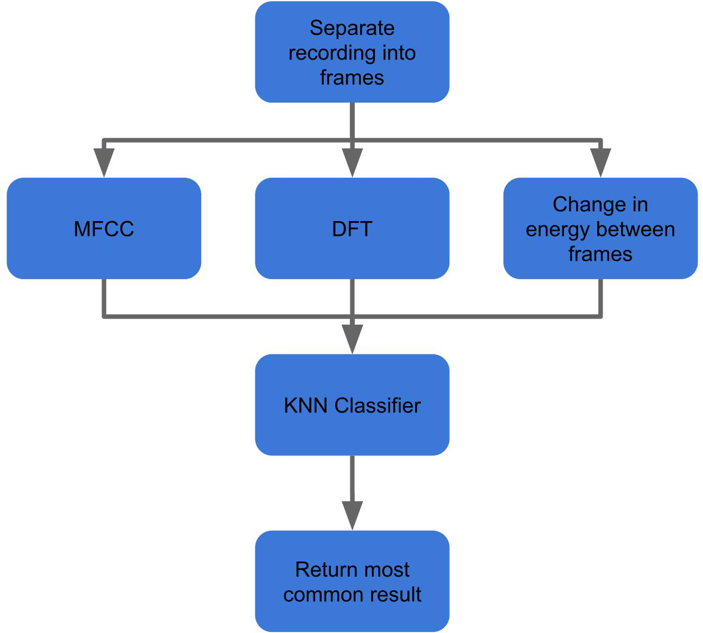
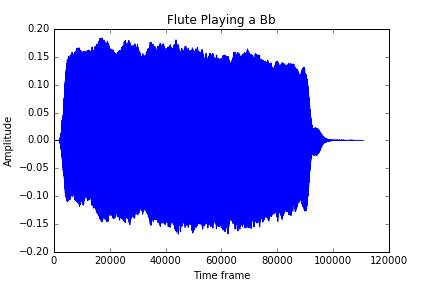
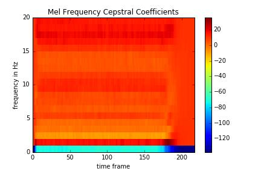
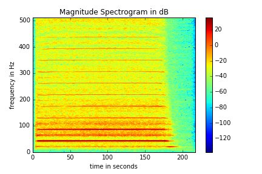

DropDa MIC (Musical Instrument Classifier)
Final Project for EECS 352: Machine Perception of Music and Audio
Northwestern University
Professor Bryan Pardo
Hannah Arntson
HannahArntson2016@u.northwestern.edu
Nicholas Hall
NicholasHall2016@u.northwestern.edu
Jason Lustbader
JasonLustbader2016@u.northwestern.edu
About
DropDa Mic is a musical instrument classification system that can identify a musical instrument from a short sample of that instrument playing. Our team identified common musical instruments used in classical music recordings and compiled a library of many short samples for each of these selected instruments. We then chose specific features for each sample that we thought would be relevant based on what we learned in the class and used a K-Nearest Neighbors algorithm (KNN) to classify samples.
Motivation
We are all very musical and can easily tell the difference between different instruments and groupings of instruments. We thought it would be interesting to teach a computer to make the same differentiations.
Method
We used musical instrument samples from the University of Iowa Musical Instrument Samples (MIS) dataset. We picked five (5) very different sounding instruments to put into our database: flute, bass clarinet, french horn, violin, and double bass. We loaded several short 2-3 second .wav samples of each using Librosa and then used the middle-most second of each audio file to account for silence at the beginning and end of notes. From there, we divided each audio sample into 2048 sample frames. For each sample, we calculated discrete Fourier transform (DFT) magnitudes, mel-frequency cepstral coefficients (MFCCs), and energy changes from frame to frame and recorded them along with the label (the instrument) in a hash table so we wouldn't have to recalculate every time we called the classifier. Next, we created a K-nearest neighbor classifier using scikit-learn. When a new input file is given, we would (like the other files) load it in with Librosa, crop it, divide it into frames and calculate the features- for each frame, we would calculate the minimum euclidean distance from the input feature space to each sample frame in our hash table's feature space. After all the frames had been tested, the instrument with the largest number of frames that were labelled as nearest-neighbor were said to be the algorithm's "guess."
Process Diagram
Sample
  Results
When we compared two very different instruments--we started with a flute and a trumpet--our classifier was very accurate. However, when we used a full training set that contained 5 instruments (flute, bass clarinet, french horn, violin, and double bass), with 44-104 distinct samples of each instrument over a wide range of notes, we found some interesting results.
Almost all of our recordings ended up being labeled as stringed instruments, either violin or double bass. A few were labeled as flutes, and not one recording was labeled as a bass clarinet or french horn, despite running 46 and 44 samples, respectively, of each instrument through the classifier. We are unsure of why the classifier ended up being heavily weighted in favor or stringed instruments. However, we did notice that each instrument's lowest pitched recordings tended to get classified as double bass, while the higher recordings were labeled as violin. This trend was noticeable across the actual violin and double bass recordings as well.
To further improve our classifier, we would spend more time experimenting with feature weights.
Almost all of our recordings ended up being labeled as stringed instruments, either violin or double bass. A few were labeled as flutes, and not one recording was labeled as a bass clarinet or french horn, despite running 46 and 44 samples, respectively, of each instrument through the classifier. We are unsure of why the classifier ended up being heavily weighted in favor or stringed instruments. However, we did notice that each instrument's lowest pitched recordings tended to get classified as double bass, while the higher recordings were labeled as violin. This trend was noticeable across the actual violin and double bass recordings as well.
To further improve our classifier, we would spend more time experimenting with feature weights.